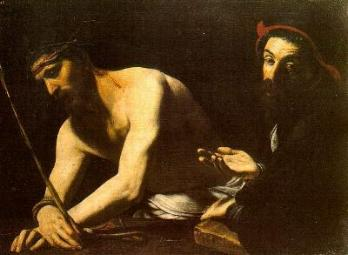
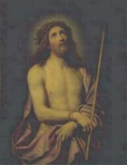
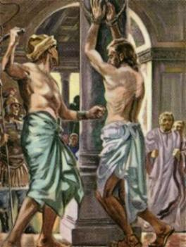
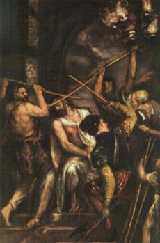
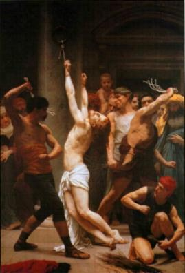
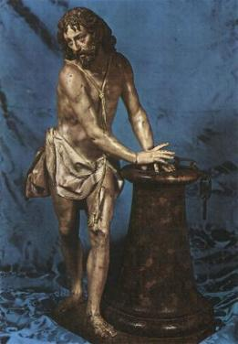
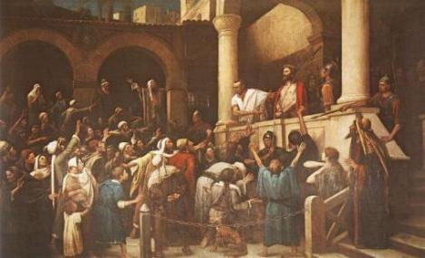
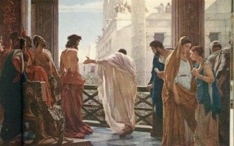
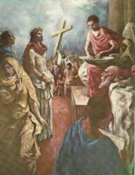

- O Tribunal Romano já estava cheio de gente quando ELE chegou.
- O Tribunal Romano já estava cheio de gente quando ELE chegou.

- O Tribunal Romano já estava cheio de gente quando ELE chegou.
Pilatos aproximou-se de JESUS, olhou a seu redor e dirigindo-se aos presentes, falou:
“Vós me apresentastes este Homem como um agitador do povo; ora, eu O interroguei diante de vós, e não encontrei neste Homem motivo algum de condenação, como O acusais. Tampouco Herodes, uma vez que ele O enviou novamente a nós. Como vedes, este Homem nada fez que mereça a morte. Por isso eu vou soltá-LO, depois de O castigar”. (Lc 23,14-16)
Apesar de arbitrário e possuir um caráter dúbio, o Governador compreendeu que JESUS era inocente, que estava sendo vítima de uma monstruosa trama arquitetada pela cúpula do Grande Conselho Judeu. Mas intimamente compreendia também, que devia ter cuidado para não entrar em atrito com as autoridades religiosas dos judeus, a fim de evitar o agravamento de sua situação em Roma, em face de sua conduta como Governador da Judéia, estar sendo criticada pelo Senado e assim, ele devia empreender todos os esforços possíveis no sentido de procurar melhorar a própria imagem.
O povo insuflado pelos homens do Sinédrio, não aceitou as ponderações do Governador e começou a gritar:
“Morra este homem!”(Lc 23,18)
Pilatos lembrou-se que era costume entre os judeus, soltar um preso na época da Páscoa. Estava enclausurado um homem violento chamado Barrabás, que foi condenado por assassinato.O Governador perguntou ao povo:
“É costume entre vós que eu vos solte um preso, na Páscoa. Quereis que vos solte o Rei dos Judeus?”(Jo 18,39)
Gritaram todos: “Morra este Homem! Solta-nos Barrabás!”(Lc 23,18)

“Não te envolvas com este justo, porque muito sofri hoje em sonho por causa DELE”. (Mt 27,19)
Todavia, revelando uma abominável covardia, teve medo de agir, de ir contra a decisão do Grande Conselho Judeu, ficou confuso e visivelmente atormentado. E como a turba continuasse a gritar pedindo que Barrabás fosse libertado, perguntou-lhes:
“Que farei de JESUS que chamam de Messias?”(Mt 27,22)
Disseram eles: “Seja crucificado!”(Mt 27,22)
Cada momento que se passava, mais indeciso Pilatos ficava. Numa derradeira tentativa de libertar JESUS, decidiu mandar flagela-LO. Seria uma saída honrosa para não desagradar os homens do Sinédrio, considerando que o SENHOR era inocente. Imaginou que eles presenciando o sofrimento DELE desistissem de pedir a crucificação.


- Tiraram a veste de JESUS e amarraram as suas mãos numa coluna
de aproximadamente 2,50 metros de altura fixada no lado externo do Tribunal, de
maneira a deixar os braços e as costas expostas ao suplício.
Dois homens postados um de cada lado usaram um chicote romano chamado “taquing” ou “flagrum”, que era feito com duas ou três talas, tendo nas extremidades bolas de chumbo ou de osso, bem afiadas.
Fotos do Santo Sudário ampliadas no tamanho de um homem, registram mais de 120 chicotadas que abrangeram toda região costal e diversos açoites nos braços.
Quando terminaram, as costas DELE sangrava muito e estava em carne viva.
Levaram-NO ao Pretório e puseram-LHE
uma capa escarlate, o “sagum”
, que era o manto usado pelos soldados romanos, com a intenção
de zombarem DELE, como se fosse uma capa real, um manto de púrpura usado
pela nobreza, chamando-O de Rei. E por ser um Rei, alguns soldados inventaram
um tipo especial de coroa, uma “Coroa de
Espinhos”, que ocupava toda a calota craniana. E a colocaram
sobre a Cabeça DELE com toda a força, fazendo com que as afiadas pontas dos
espinhos, penetrassem na pele da testa e no couro cabeludo, dilacerando a carne,
permitindo que o precioso Sangue escorresse por sua Sagrada Face. Sempre caçoando
e pilheriando, os soldados colocaram um caniço na Mão direita DELE, era o cetro
que não podia faltar ao Rei. 
“Salve, ó Rei dos Judeus!” (Mt 27,29)
Como ELE não reagia e nem reclamava, mantendo uma atitude passiva, com inteira aceitação do martírio, aumentaram ainda mais as maldades, imprimindo maior violência e crueldade, chutando-LHE as pernas, dando-LHE pontapés, socos no Corpo e na Face, machucando-O brutalmente. Escarravam e cuspiam NELE como se tivessem nojo de JESUS; tiraram o caniço de sua Mão e bateram com ele em sua Cabeça, provocando maior penetração da Coroa de Espinhos, produzindo em consequência terríveis dores lancinantes, que por mais de uma vez lançou-O ao chão.
Foi um suplício bárbaro, revestido de uma brutalidade que ultrapassa a qualquer imaginação, que minou a sua resistência física, deixando-O abatido, com o olhar triste e o Corpo coberto de chagas.




- Depois de passar por aqueles absurdos e atrozes sofrimentos, foi
conduzido a presença de Pilatos, que O levou para mostra-LO ao povo:
“Eis que eu vo-LO trago aqui fora, para saberdes que não encontro NELE motivo algum de condenação”. (Jo 19,4)
JESUS estava com a Face deformada e completamente ensanguentada pela brutalidade das agressões, com a Coroa de Espinhos na Cabeça e o manto vermelho nos Ombros.
Falou o Governador: “Ecce Homo!”(Eis o Homem)(Jo 19,5)

Os homens do Sanedrim ansiosos para consumarem a funesta intenção, insuflaram ainda mais o povo, que gritava:
“Crucifica-O! Crucifica-O!”(Jo 19,6)
Disse-lhes Pilatos: “Tomai-O vós e crucificai-O, porque eu não encontro culpa NELE”.(Jo 19,6)
E o pessoal do Conselho Judeu continuava a instigar: “Se o soltas, não és amigo de César! Todo aquele que se faz Rei, opõe-se a César!”(Jo 19,12)
Pilatos percebendo a malícia que fomentavam e lembrando-se de seu problema pessoal com o Senado em Roma, acovardou-se definitivamente. Trouxe JESUS para fora e colocou-O no lugar denominado “Litóstrotos” e disse as autoridades judaicas e ao povo:
“Eis o vosso Rei!”(Jo 19,14)
Eles gritavam: “À morte! À morte! Crucifica-O!”(Jo 19,15)
Disse-lhes Pilatos: “Crucificarei o vosso Rei?”(Jo 19,15)
Os sumos-sacerdotes responderam: “Não temos outro Rei a não ser César!” 
Pilatos vendo que não ajudavam as suas tentativas para libertar o Rabi de Nazaré, e intimamente envolvido por um grande temor, preocupado em defender a “própria pele”, com o objetivo de não permitir que o julgamento se arrastasse sem comando e se transformasse num tumulto, mandou buscar água e lavou as mãos na presença do povo:
“Estou inocente desse Sangue. A responsabilidade é vossa”.
O povo respondeu: “O seu Sangue caia sobre nós e sobre os nossos filhos”.(Mt 27,25)
O Governador ordenou que soltassem Barrabás e que o "Rei dos Judeus" fosse crucificado.
Conduziram JESUS para o Pretório, tiraram-LHE a capa escarlate e O vestiram com a sua própria veste e O levaram para crucificar.